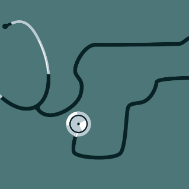

THE UNITED AGAINST GUN VIOLENCE CLUB (UAGV CLUB) OF MCLEAN HIGH SCHOOL
Mission of the Club
Our primary objective is to foster a safe and inclusive environment where students can stand up against gun violence through advocacy, event organization, and meaningful dialogue. By cultivating empathy, understanding, and a spirit of activism, our club aims to inspire positive change and advocate for peaceful solutions to address the multifaceted issue of gun violence. Together, as members of the United Against Gun Violence Club, we strive to create a safer future for all students.
Dr. Reid’s Message on Gun Violence Prevention
(September 21, 2023)
Gun violence continues to impact communities across our nation. According to the non-profit Gun Violence Archive, there have already been more than 470 mass shootings across the United States this calendar year. The organization defines a mass shooting as an incident in which four or more people are injured or killed, including in homes and in public places.
Read the full article: Gun Violence Prevention Letter|Fairfax County Public Schools
Gun Violence in Virginia
In an average year, 992 people die by guns in Virginia. With a rate of 11.4 deaths per 100,000 people, Virginia has the 34th-highest rate of gun deaths in the United States. (Data provided by EveryStat for Gun Safty), read the full article here: Every-State-Fact-Sheet-2.0-042720-Virginia.pdf everytownresearch.org
Bipartisan Safer Communities Act Being Signed into Law
(June 25, 2022)
A landmark legislation aimed at reducing gun violence was signed into law in June 2022. The bill incorporated comparable provisions to his Virginia Plan, including enhancements to background checks, bolstered protections for victims of domestic violence, and incentives for states to enact laws facilitating the temporary removal of firearms from individuals who pose a significant risk to themselves or others.
Read the full text of the bill: OLL22581 (senate.gov)
Read a summary of the bill: Bipartisan Safer Communities Act One-Pager (senate.gov)

Firearm Injury Prevention Research
A comprehensive approach to preventing and responding to firearm injuries is needed, including strategies that engage community and street outreach programs, implement hospital-based violence prevention programs, improve community physical environments, enhance secure storage of firearms, and strengthen social and economic supports.
Read the full article: Emergency Department Visits for Firearm Injuries Before and During the COVID-19 Pandemic — United States, January 2019–December 2022 | MMWR cdc.gov
Questions
Contact mhsuagv@gmail.com to get more information about the club.
McLean, Virginia | All Rights Reserved 2023